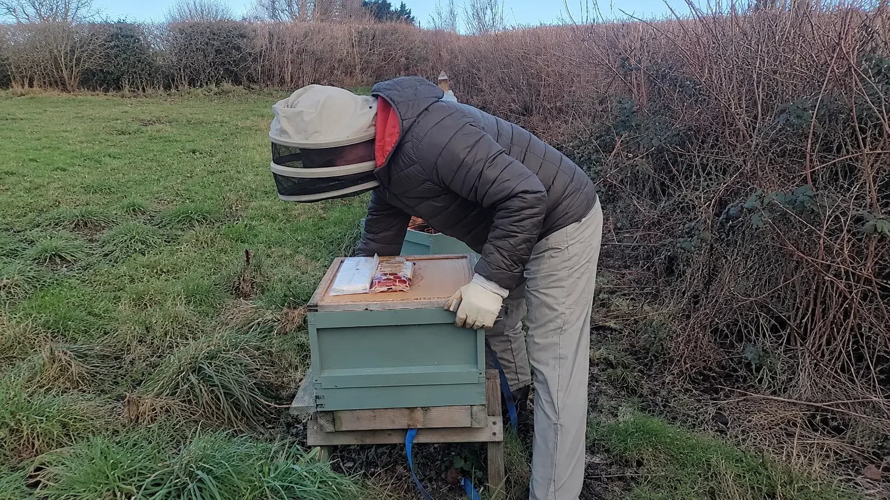

Last updated: 28 October 2026
One of My Winter Checks Doesn't Involve Opening the Hive
As the season draws to a close, I start thinking less about lifting frames and more about whether the bees have everything they need to get through the months ahead. One of the simplest things I can do is heft the hive — give it a small, careful lift to judge how heavy it feels.
It sounds almost too simple. No frames to pull out, no need to disturb the cluster and no special equipment if all you're doing is getting a feel for the weight. But there's a bit more to it than giving the box a tug and deciding it's heavy enough.
For me, the value is in learning what a particular hive feels like when it's well provisioned and then noticing changes as autumn turns to winter. It's one of those jobs that becomes more useful with practice.
What I Mean When I Say I'm Hefting a Hive

Hefting doesn't mean picking up the complete beehive and carrying it about. It means gently lifting one side just enough to feel the resistance, settling it back on the stand, and then doing the same on the other side.
There are a few things I always want to avoid: tipping the stack, shifting the boxes out of position, snagging a strap or straining my back. If a hive isn't stable or it cannot be lifted safely, I wouldn't force it.
With the bees settled for winter, a small external movement tells me more than an unnecessary cold-weather inspection would.
The winter beekeeping guide explains why keeping disturbance to a minimum matters once the temperature drops.
It's Not Just About Whether a Hive Feels Heavy
I think this is where a new beekeeper can easily be misled. A substantial wooden hive, especially one with more than one box, can feel heavy even if its food stores are not as good as they should be. Conversely, a different type of hive may feel lighter simply because the equipment weighs less.
That's why I don't think there's much value in saying every hive should weigh one magic number. A single-brood wooden National, a brood-and-a-half setup and a poly hive won't all give the same feel.
The National Bee Unit gives a useful autumn guideline of around 20 kg of honey or equivalent food stores for a typical colony. But that is a guideline for food, not a statement that the whole hive should weigh 20 kg. Colony needs vary with size, weather and brood rearing.
When inspections are still appropriate, looking at how many frames contain stores helps establish the starting point. After that, hefting can help you notice whether the weight is falling.
Why I Check Both Sides
Food isn't always distributed evenly across a brood box. One side can feel different from the other, particularly depending on where the bees have stored honey or how the hive is arranged.
For that reason, I check each side rather than relying on one quick lift. I keep the movement small and consistent so that I'm comparing the same hive in roughly the same way from one visit to the next.
It's not a laboratory measurement — and I wouldn't try to describe it as one — but it can help me spot a change that deserves attention.
My simple approach
- Make sure the stand, hive and roof are secure, and that there is no reason lifting might destabilise them.
- Using a safe, accessible point on the hive floor, lift one side only a little, without shifting the stack.
- Lower it gently and repeat on the other side.
- Think back to how the same hive felt when winter preparations were complete, rather than comparing it directly with a differently configured hive.
- If it feels noticeably lighter, consider whether the colony may need supplementary food and how to check this with minimal disturbance.
If you have a back problem or the setup is too awkward, use a suitable weighing method or get help. A full hive can be surprisingly heavy.
What If You Can't Judge the Weight by Feel?
I can understand why hefting seems vague when you're first shown how to do it. What exactly is supposed to feel heavy? And how heavy is heavy enough?
One option is to use a luggage scale or spring balance with a safe, suitable lifting arrangement. Recording comparable readings from both sides can help track the same colony over time. Just remember that the method and pivot points affect the figures, so don't assume adding two readings always gives an accurate total weight unless the setup is designed for that.
For me, the main lesson is to build up a consistent record or sense of the weight, not to rely on a number you've seen quoted for someone else's hive.
What I Do if a Colony Seems to Be Getting Light
Winter stores aren't static. The bees gradually consume them, and the rate of use can increase again as brood rearing starts later in winter. That's why a hive that felt comfortably heavy in autumn can become a concern in January or February.
If a colony feels unexpectedly light, I wouldn't ignore it — but nor would I automatically open the brood box on a cold day to find out why.
The next step depends on the season and the circumstances. When bees can still take down and process syrup during autumn, late-season feeding decisions are different from emergency feeding in cold weather. In winter, fondant positioned so the cluster can reach it is commonly used when stores are low.
My guide to feeding bees for winterwinter care advice for the wider picture.
Why the Time of Year Matters
| When | What I'm looking for | Why it matters |
|---|---|---|
| Late summer and early autumn | An assessment of stores while inspections and feeding are still practical | It gives a starting point before the colder weather |
| October and November | Whether each hive feels well provisioned and remains secure | Helps pick up colonies that may need attention before winter advances |
| December | Changes in weight without opening the brood nest | Stores are being consumed, even when the hive looks quiet |
| January and February | Whether a colony is becoming noticeably lighter | Food demand may increase as brood rearing resumes |
For monthly jobs and the changing needs of the colony, see October beekeeping, November beekeeping, December beekeeping and January beekeeping.
The Other Things I Look at During a Winter Visit
While I'm at the hive, I'm not just thinking about stores. I can also check whether the roof and straps are secure, whether the entrance is clear, and whether anything has shifted after wind or rain.
As I discussed in my personal article on winter hive insulation, I now use wool-like insulation in an eke above the crown board rather than wrapping the outside of the hives. That helps explain the physical setup I'm checking, although insulation doesn't replace adequate stores.
A quick visit can tell me quite a lot without taking the hive apart. There is always the temptation to look inside, but in the colder months I would rather have a genuine reason before disturbing the bees.
My Thoughts on Hefting
What I like about hefting is its simplicity. It isn't fancy, and it won't tell you exactly how many kilograms of honey are left. But it gives you a practical way of following the condition of a colony through winter without repeatedly opening it.
I wouldn't expect someone new to beekeeping to get the feel of it straight away. It takes repetition, especially when you've got different hives and different amounts of equipment on them.
For me, the key is to start with a sensible assessment of stores in autumn, then learn the feel of each hive and pay attention when something changes.
Winter beekeeping is often about knowing when not to interfere. A gentle check of the weight can be far more useful than an unnecessary inspection.
Frequently Asked Questions
Hefting means gently raising one side of a hive a small amount to assess how heavy it feels, then checking the other side. It helps monitor changing food stores without opening the colony.
There is no single reliable gross hive weight because hive types, boxes, floors, roofs and stores differ. The National Bee Unit suggests roughly 20 kg of honey or equivalent stores in autumn for a typical colony, but you must distinguish food stores from the weight of the equipment.
Check each side separately with a small, controlled lift, using an accessible safe edge of the hive floor or appropriate weighing arrangement. Do not fully lift or tip a heavy hive, and avoid stressing your back.
Not by feel alone. Hefting is a useful comparison that improves with experience. A luggage scale used consistently on both sides can help document changes, but a meaningful reading still needs allowance for equipment weight.
Monitor periodically, and more closely if stores are becoming low or the weather is prolonged and poor. Keep the checks brief and non-intrusive.
Consider whether emergency fondant is needed and check that bees can access it without unnecessarily exposing the brood nest. Refer to suitable seasonal feeding guidance or seek experienced local advice.
Join the Conversation
Beekeeping is all about learning from one another. Follow BeezKnees for more practical UK beekeeping guides, seasonal observations and equipment explainers.
Follow the BeezKnees Facebook Page